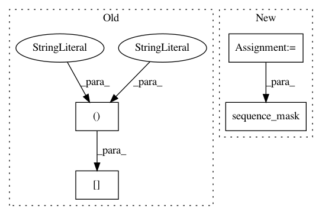

e9086f5d37f5f46b8327bf022c7b0c70d42460d1,magenta/models/shared/events_rnn_graph.py,,build_graph,#Any#Any#Any#,56
Before Change
if mode == "train" or mode == "eval":
if hparams.skip_first_n_losses:
logits = tf.reshape(logits_flat, [hparams.batch_size, -1, num_classes])
logits = logits[:, hparams.skip_first_n_losses:, :]
logits_flat = tf.reshape(logits, [-1, num_classes])
labels = labels[:, hparams.skip_first_n_losses:]
labels_flat = tf.reshape(labels, [-1])
After Change
labels_flat = tf.reshape(labels, [-1])
mask = tf.sequence_mask(lengths)
if hparams.skip_first_n_losses:
skip = tf.minimum(lengths, hparams.skip_first_n_losses)
skip_mask = tf.sequence_mask(skip, maxlen=tf.reduce_max(lengths))
mask = tf.logical_and(mask, tf.logical_not(skip_mask))
mask = tf.cast(mask, tf.float32)
mask_flat = tf.reshape(mask, [-1])
In pattern: SUPERPATTERN
Frequency: 3
Non-data size: 4
Instances
Project Name: tensorflow/magenta
Commit Name: e9086f5d37f5f46b8327bf022c7b0c70d42460d1
Time: 2017-03-23
Author: earnest.marshi@gmail.com
File Name: magenta/models/shared/events_rnn_graph.py
Class Name:
Method Name: build_graph
Project Name: asyml/texar
Commit Name: 82c52dff6d625dc4c231bfacf0c4d5cd18654cca
Time: 2018-08-28
Author: zhitinghu@gmail.com
File Name: texar/modules/encoders/transformer_encoders.py
Class Name: TransformerEncoder
Method Name: _build
Project Name: OpenNMT/OpenNMT-py
Commit Name: 668c3ef362995c55633fde592354160fec1d1efd
Time: 2019-06-27
Author: dylan.flaute@gmail.com
File Name: onmt/decoders/transformer.py
Class Name: TransformerDecoder
Method Name: forward